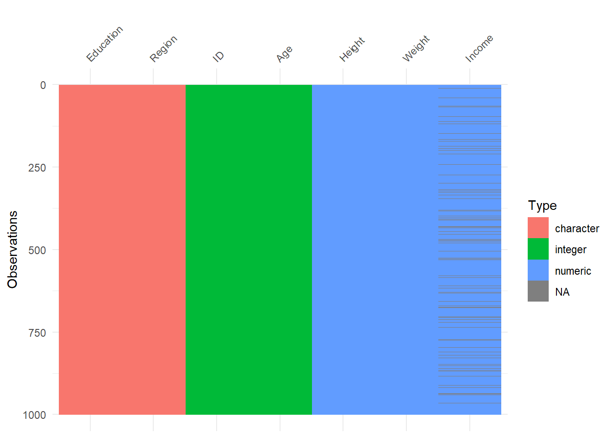
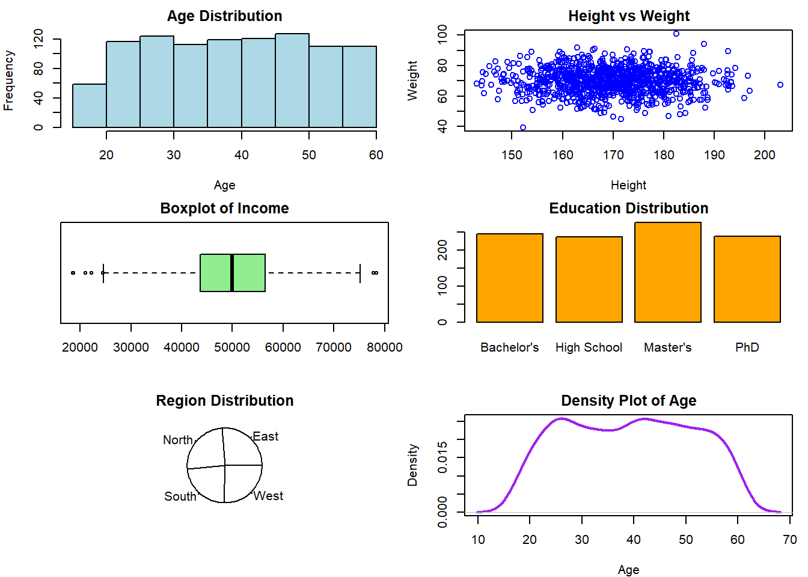

library(visdat)
# Set seed for reproducibility
set.seed(123)
# Generate random data
num_rows <- 1000
data <- data.frame(
ID = 1:num_rows,
Age = sample(18:60, num_rows, replace = TRUE),
Height = rnorm(num_rows, mean = 170, sd = 10),
Weight = rnorm(num_rows, mean = 70, sd = 8),
Income = rnorm(num_rows, mean = 50000, sd = 10000),
Education = sample(c("High School", "Bachelor's", "Master's", "PhD"), num_rows, replace = TRUE),
Region = sample(c("North", "South", "East", "West"), num_rows, replace = TRUE)
)
# Introduce missing values
data[sample(1:num_rows, 100, replace = FALSE), "Income"] <- NA
# Visualize missing values
vis_dat(data)
# Summary statistics
summary_data <- summary(data)
# Plotting
par(mfrow = c(3, 2), mar = c(4, 4, 2, 1))
# Histogram of Age
hist(data$Age, main = "Age Distribution", xlab = "Age", col = "lightblue", border = "black")
# Scatter plot of Height vs Weight
plot(data$Height, data$Weight, main = "Height vs Weight", xlab = "Height", ylab = "Weight", col = "blue")
# Boxplot of Income
boxplot(data$Income, main = "Boxplot of Income", col = "lightgreen", border = "black", horizontal = TRUE)
# Bar plot of Education
barplot(table(data$Education), main = "Education Distribution", col = "orange", border = "black")
# Pie chart of Region
pie(table(data$Region), main = "Region Distribution", col = rainbow(length(levels(data$Region))))
# Density plot of Age
plot(density(data$Age), main = "Density Plot of Age", xlab = "Age", col = "purple", lwd = 2)
# Print summary statistics
cat("\nSummary Statistics:\n")
Summary Statistics:print(summary_data) ID Age Height Weight
Min. : 1.0 Min. :18.00 Min. :143.1 Min. : 39.40
1st Qu.: 250.8 1st Qu.:28.00 1st Qu.:162.8 1st Qu.: 64.80
Median : 500.5 Median :40.00 Median :169.4 Median : 70.00
Mean : 500.5 Mean :39.05 Mean :169.7 Mean : 69.88
3rd Qu.: 750.2 3rd Qu.:49.00 3rd Qu.:176.6 3rd Qu.: 75.31
Max. :1000.0 Max. :60.00 Max. :203.0 Max. :100.81
Income Education Region
Min. :18535 Length:1000 Length:1000
1st Qu.:43720 Class :character Class :character
Median :49964 Mode :character Mode :character
Mean :50149
3rd Qu.:56485
Max. :78391
NA's :100 # Correlation matrix
cor_matrix <- cor(data[, c("Age", "Height", "Weight", "Income")], use = "complete.obs")
cat("\nCorrelation Matrix:\n")
Correlation Matrix:print(cor_matrix) Age Height Weight Income
Age 1.000000000 0.003546126 0.009587395 0.05722516
Height 0.003546126 1.000000000 -0.023403231 0.01833394
Weight 0.009587395 -0.023403231 1.000000000 -0.01199974
Income 0.057225156 0.018333936 -0.011999736 1.00000000# Regression model
model <- lm(Weight ~ Age + Height + Income, data = data, na.action = na.exclude)
summary_model <- summary(model)
cat("\nLinear Regression Model:\n")
Linear Regression Model:print(summary_model)
Call:
lm(formula = Weight ~ Age + Height + Income, data = data, na.action = na.exclude)
Residuals:
Min 1Q Median 3Q Max
-31.1903 -5.0391 0.1676 5.4269 31.0754
Coefficients:
Estimate Std. Error t value Pr(>|t|)
(Intercept) 7.344e+01 4.871e+00 15.078 <2e-16 ***
Age 6.939e-03 2.239e-02 0.310 0.757
Height -1.889e-02 2.718e-02 -0.695 0.487
Income -1.019e-05 2.803e-05 -0.364 0.716
---
Signif. codes: 0 '***' 0.001 '**' 0.01 '*' 0.05 '.' 0.1 ' ' 1
Residual standard error: 8.119 on 896 degrees of freedom
(100 observations deleted due to missingness)
Multiple R-squared: 0.0007887, Adjusted R-squared: -0.002557
F-statistic: 0.2358 on 3 and 896 DF, p-value: 0.8715# Save plots as PNG files
png("Age_Distribution.png")
hist(data$Age, main = "Age Distribution", xlab = "Age", col = "lightblue", border = "black")
dev.off()png
2 png("Height_vs_Weight.png")
plot(data$Height, data$Weight, main = "Height vs Weight", xlab = "Height", ylab = "Weight", col = "blue")
dev.off()png
2 png("Income_Boxplot.png")
boxplot(data$Income, main = "Boxplot of Income", col = "lightgreen", border = "black", horizontal = TRUE)
dev.off()png
2 png("Education_Barplot.png")
barplot(table(data$Education), main = "Education Distribution", col = "orange", border = "black")
dev.off()png
2 png("Region_Piechart.png")
pie(table(data$Region), main = "Region Distribution", col = rainbow(length(levels(data$Region))))
dev.off()png
2 png("Age_Density.png")
plot(density(data$Age), main = "Density Plot of Age", xlab = "Age", col = "purple", lwd = 2)
dev.off()png
2 # Display saved plots
cat("\nPlots saved as PNG files: Age_Distribution.png, Height_vs_Weight.png, Income_Boxplot.png, Education_Barplot.png, Region_Piechart.png, Age_Density.png\n")
Plots saved as PNG files: Age_Distribution.png, Height_vs_Weight.png, Income_Boxplot.png, Education_Barplot.png, Region_Piechart.png, Age_Density.png